搭建jupyter远程服务器
购买云主机
首先去华为云，阿里云，腾讯云，亚马逊云等任一云平台购买一台云主机，如果自己有接入外网的云主机也可以。
开通云主机上的jupyter远程端口，端口号可以随便设置，例如我设一个：1357
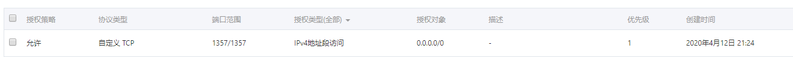搭建jupyter
首先为安装conda
去下图网页复制linux python3.7 64bit对应的minconda链接。如果你的想安装在其它系统上或者想要Python2版本，可以复制对应链接。
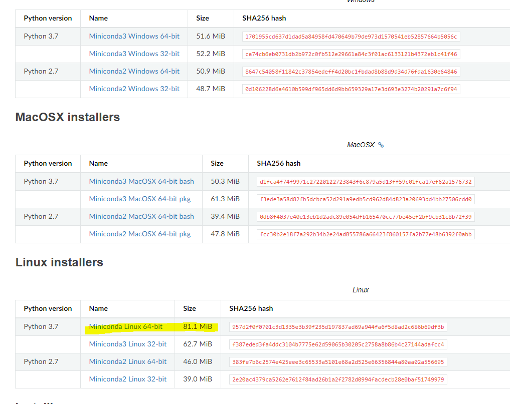登陆云主机，创建conda文件夹，用于安装conda和jupyter
mkdir conda通过刚才复制的链接，下载minconda
wget https://repo.anaconda.com/miniconda/Miniconda3-latest-Linux-x86_64.sh下载完成后，是一个Miniconda3-latest-Linux-x86_64.sh文件，运行sh文件，
bash Miniconda3-latest-Linux-x86_64.sh输出应该是如下的
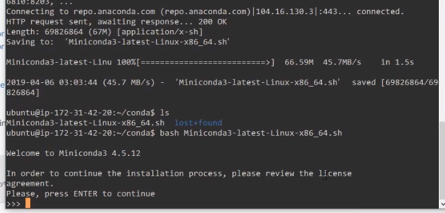
内容很多，可以直接按enter键，显示license，比较长，可以直接按q键退出，
显示如下
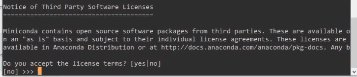
输入yes，显示如下
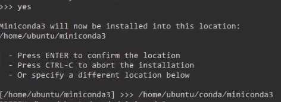
提示安装的目录，第一个是默认的路径，第二个是我输入指定的路径。
系统会自动安装需要的工具，安装完后，会提示是否将环境初始化的工作放到.bashrc文件中，以后开机可以自动初始化。如下所示，输入yes
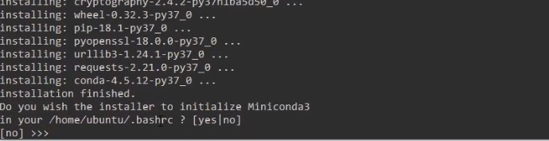
安装完后，可以看到指定路径下多了一个指定的文件夹，例如我的是minconda3运行.bashrc初始化环境。
.~/.bashrc更新conda，也可以不更新，不过可能有些工具包更新了，建议更新一下
conda upgrade conda安装好conda之后，就可以创建虚拟环境了，例如创建一个jupyter虚拟环境。
conda create -n jupyter python=3.7 y创建后显示如下，
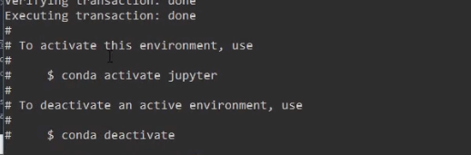
可以激活了，输入
conda activate jupyter激活环境后，在命令行前会有”(jupyter)”提示，显示jupyter已经激活了。可以通过
python –verison 和pip –verison查看python和pip的版本，应该是3.7和对应的pip版本号。
安装jupyter
在jupyter虚拟环境中，通过pip安装jupyter安装包。
pip install jupyter安装完成后，查看jupyter版本：
jupyter --verison在conda目录下创建一个jupyter目录：
mkdir jupyter_home
cd jupyter_home在jupyter_home目录下运行notebook：
jupyter notebook显示如下：
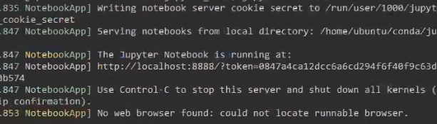
此时可以通过localhost：8888访问jupyter，如果想要远程访问，还需要做一些额外的配置。
ctrl+c关闭jupyter。
配置远程访问
进入python环境，输入如下命令
from IPython.lib import passwd
passwd()然后根据提示输入密码，验证密码，最后会打印一串sha1编码,拷贝sha1哪一行保存一下，留用。
如下图
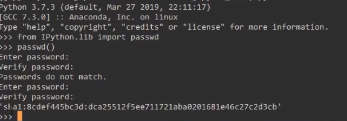
退出python编译模式，命令行输入
jupyter notebook --generate-config显示如下：
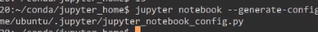
编辑生成的jupyter_notebook_config.py文件：
在文件开始添加如下内容：
c.NotebookApp.allow_remote_access = True
c.NotebookApp.ip = "*"
c.NotebookApp.open_browser = False
c.NotebookApp.password = "sha1:xxxxxxxx"
c.NotebookApp.port = 1357
c.NotebookApp.notebook_dir = "/home/ubuntu/conda/jupyter_home"其中：
c.NotebookApp.ip = “*” //允许访问jupyter的ip地址，*表示任意ip都可以访问
c.NotebookApp.open_browser = False //启动时不启动浏览器。
c.NotebookApp.password = “sha1:xxxxxxxx” //上一步中保存的sha1编码
c.NotebookApp.port = 1357 //计算云中打开的端口。
c.NotebookApp.notebook_dir = “/home/ubuntu/conda/jupyter_home” //jupyter文件的保存路径
保存，退出。
再次运行”jupyter notebook”，显示如下：
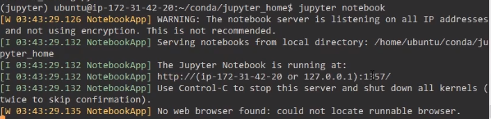
在远程任意服务器输入“计算云公网ip：1357”即可访问jupyter，密码输入前面passwd那一步的密码即可。
参考：https://www.bilibili.com/video/BV1Mb41137jC?t=1767
转载请注明来源，欢迎对文章中的引用来源进行考证，欢迎指出任何有错误或不够清晰的表达。可以在下面评论区评论